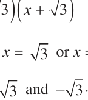

Relationship between Zeroes and Coefficients of a Polynomial
You have already seen that zero of a linear polynomial ax \(+ b\) is \(- \frac{b}{a}\) . We will now try to answer the question raised in Section 2.1 regarding the relationship between zeroes and coefficients of a quadratic polynomial. For this, let us take a quadratic polynomial, say p(x) \(= 2x^{2} - 8x + 6\). In Class IX, you have learnt how to factorise quadratic polynomials by splitting the middle term. So, here we need to split the middle term ‘ - 8x’ as a sum of two terms, whose product is \(6 \times 2x^{2} = 12x^{2}\). So, we write
\(2x^{2} - 8x + 6 = 2x^{2} - 6x - 2x + 6 = 2x(x - 3) - 2(x - 3)\)
\(= (2x - 2)(x - 3) = 2(x - 1)(x - 3)\)
So, the value of p(x) \(= 2x^{2} - 8x + 6\) is zero when \(x - 1 = 0\) or \(x - 3 = 0\), i.e., when \(x = 1\) or \(x = 3\). So, the zeroes of \(2x^{2} - 8x + 6\) are 1 and 3. Observe that :
Sum of its zeroes \(= 1 + 3 = 4 = \frac{--(8)}{2} =\) -(Coefficient ofCoefficient of \(xx)^{2}\) Product of its zeroes \(= 1 \times 3 = 3 = \frac{6}{2} =\) CoefficientConstant termof \(x^{2}\)
Let us take one more quadratic polynomial, say, p(x) \(= 3x^{2} + 5x - 2\). By the method of splitting the middle term,
\(3x^{2} + 5x - 2 = 3x^{2} + 6x - x - 2 = 3x(x + 2) - 1(x + 2)\)
\(= (3x - 1)(x + 2)\)
Hence, the value of \(3x^{2} + 5x - 2\) is zero when either \(3x - 1 = 0\) or \(x + 2 = 0\), i.e., when \(x = \frac{1}{3}\) or \(x = - 2\). So, the zeroes of \(3x^{2} + 5x - 2\) are \(\frac{1}{3}\) and \(- 2\). Observe that :
-(Coefficient of x) Sum of its zeroes \(= \frac{1}{3} +-( 2) = \frac{-5}{3} =\) Coefficient of \(x^{2}\)
Constant term Product of its zeroes \(= \frac{1}{3} \times\) -( \(2) = \frac{-2}{3} =\) Coefficient of \(x^{2}\)
In general, if α* and β* are the zeroes of the quadratic polynomial p(x) \(= ax^{2} +\) bx \(+ c\), \(a \ne 0\), then you know that \(x -\) α and \(x -\) β are the factors of p(x). Therefore,
\(ax^{2} +\) bx \(+ c =\) k(x - α) (x - β), where k is a constant
\(= k[x^{2} -\) (α + β)x + α β] \(= kx^{2} -\) k(α + β)x \(+ k\) α β
Comparing the coefficients of \(x^{2}\), x and constant terms on both the sides, we get
\(a = k\), \(b = -\) k(α + β) and \(c =\) kαβ.
This gives α + β = ( - b}{a} ,
αβαβαβαβαβ \(= \frac{c}{a}\)
- *α,β are Greek letters pronounced as ‘alpha’ and ‘beta’ respectively. We will use later one
more letter ‘γ’ pronounced as ‘gamma’.
-(Coefficient of x) i.e., sum of zeroes = α + β \(= - \frac{b}{a} =\) Coefficient of \(x^{2}\) ,
Constant term product of zeroes = αβ \(= \frac{c}{a} =\) Coefficient of \(x^{2}\) .
Let us consider some examples.
Example 2 : Find the zeroes of the quadratic polynomial \(x^{2} + 7x + 10\), and verify the relationship between the zeroes and the coefficients.
Solution : We have
\(x^{2} + 7x + 10 =\) (x \(+ 2)(x + 5)\)
So, the value of \(x^{2} + 7x + 10\) is zero when \(x + 2 = 0\) or \(x + 5 = 0\), i.e., when \(x = - 2\) or \(x = - 5\). Therefore, the zeroes of \(x^{2} + 7x + 10\) are \(- 2\) and \(- 5\). Now,
sum of zeroes \(= - 2 +\) ( \(- 5) = - (7) = \frac{-(7)}{1} = -\) (Coefficient ofCoefficient of \(x^{2}x)\) ,
Constant term product of zeroes \(= (-2) \times\) -( \(5) = 10 = \frac{10}{1} =\) Coefficient of \(x^{2} \cdot\)
Example 3 : Find the zeroes of the polynomial \(x^{2} - 3\) and verify the relationship between the zeroes and the coefficients.
Solution : Recall the identity \(a^{2} - b^{2} =\) (a - b)(a + b). Using it, we can write:
\(x^{2} - 3 =\) ( - )( + )

So, the value of \(x^{2} - 3\) is zero when \(= - 3 \cdot\)
Therefore, the zeroes of \(x^{2} - 3\) are \(\cdot\)
Now,
sum of zeroes \(= 3 - 3 = 0 =\) -(Coefficient of x) , Coefficient of \(x^{2}\)
Constant term product of zeroes = ( \(3)(- 3) = - 3 = \frac{-3}{1} =\) Coefficient of \(x^{2} \cdot\)
Example 4 : Find a quadratic polynomial, the sum and product of whose zeroes are \(- 3\) and 2, respectively. Solution : Let the quadratic polynomial be \(ax^{2} +\) bx \(+ c\), and its zeroes be α and β. We have
α + β \(= - 3 = \frac{-b}{a}\) ,
and αβ \(= 2 = \frac{c}{a}\) .
If \(a = 1\), then \(b = 3\) and \(c = 2\).
So, one quadratic polynomial which fits the given conditions is \(x^{2} + 3x + 2\). You can check that any other quadratic polynomial that fits these conditions will be of the form \(k(x^{2} + 3x + 2)\), where k is real. Let us now look at cubic polynomials. Do you think a similar relation holds between the zeroes of a cubic polynomial and its coefficients? Let us consider p(x) \(= 2x^{3} - 5x^{2} - 14x + 8\).
You can check that p(x) \(= 0\) for \(x = 4\), \(- 2\), \(\frac{1}{2} \cdot\) Since p(x) can have atmost three zeroes, these are the zeores of \(2x^{3} - 5x^{2} - 14x + 8\). Now,
-(Coefficient of \(x^{2})\) sum of the zeroes \(= 4 +-( 2) + \frac{1}{2} = \frac{5}{2} = \frac{--(5)}{2} =\) Coefficient of \(x^{3}\) ,
product of the zeroes \(= 4 \times\) -( \(2) \times \frac{1}{2} =- 4 = \frac{-8}{2} =\) Coefficient - Constant \(oftermx^{3}\) .
However, there is one more relationship here. Consider the sum of the products of the zeroes taken two at a time. We have
\({4 \times -( 2)} + (-2) \times \frac{1}{2} + \frac{1}{2} \times 4\)
\(= - 8 -+1 2 =-7 = \frac{-14}{2} =\) Coefficient of \(x^{3}\) .
In general, it can be proved that if α, β, γ are the zeroes of the cubic polynomial
\(ax^{3} + bx^{2} +\) cx \(+ d\), then
α + β + γ \(= \frac{ - b}{a} , αβαβαβαβαβ + βγβγβγβγβγ + γαγαγαγαγα = \frac{c}{a}\) , α β γα β γα β γα β γα β γ = ( - d}{a} .
Let us consider an example.
Example 5* : Verify that 3, \(- 1\), \(- \frac{1}{3}\) are the zeroes of the cubic polynomial p(x) \(= 3x^{3} - 5x^{2} - 11x - 3\), and then verify the relationship between the zeroes and the coefficients. Solution : Comparing the given polynomial with \(ax^{3} + bx^{2} +\) cx \(+ d\), we get
\(a = 3\), \(b = - 5\), \(c = - 11\), \(d = - 3\). Further \(p(3) = 3 \times 3^{3} - (5 \times 3^{2}) - (11 \times 3) - 3 = 81 - 45 - 33 - 3 = 0\), p( \(- 1) = 3 \times\) ( \(- 1)^{3} - 5 \times\) ( \(- 1)^{2} - 11 \times\) ( \(- 1) - 3 = - 3 - 5 + 11 - 3 = 0\),
\(p - \frac{1}{3} = 3 \times - \frac{1}{3} - 5 \times - \frac{1}{3} - 11 \times - \frac{1}{3} - 3\), \(= - \frac{1}{9} - \frac{5}{9} + \frac{11}{3} - 3 = - \frac{2}{3} + \frac{2}{3} = 0\) Therefore, 3, \(- 1\) and \(- \frac{1}{3}\) are the zeroes of \(3x^{3} - 5x^{2} - 11x - 3\). So, we take α \(= 3\), β \(= - 1\) and γ \(= - \cdot \frac{1}{3}\) Now, α+β+γ= \(3 +-( 1) +- \frac{1}{3} = 2- \frac{1}{3} = \frac{5}{3} = \frac{--(5)}{3} = \frac{-b,}{a}\) αβ+βγ+γα= \(3 \times\) -( \(1) +-( 1) \times - \frac{1}{3} +- \frac{1}{3} \times 3 =-3 + \frac{1}{3} - 1 = \frac{-11}{3} = \frac{c}{a}\) , αβγ= \(3 \times\) -( \(1) \times - \frac{1}{3} = 1 = \frac{--(3)}{3} = \frac{-d}{a}\) .
- *Not from the examination point of view.